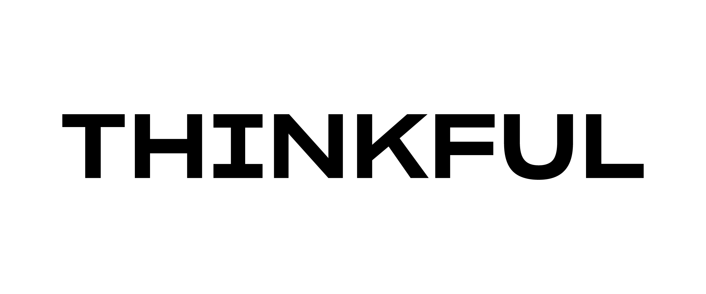
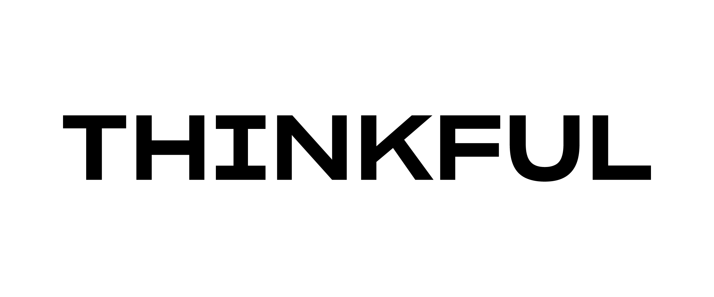

Hi! I am Fernando Reynoso
I am a Thinkful student living in Loganville, Georgia.
My Interests Are:
- Building new projects
- Exciting Coding adventure
- Working with fellow developers
Software Engineer
I am a Thinkful student living in Loganville, Georgia.
My Interests Are:
Web development to me is fun, exciting, and also very challenging which makes it so great. I enjoy finding the solutions to problems and building code.
I am anxious to start to code with a team of ambitous fellow developers and further my knowledge of this challenging career. I consider myself a team player and enjoy working with others on projects. I am hopeful to see where that takes me.
When I am not working on web development I am: